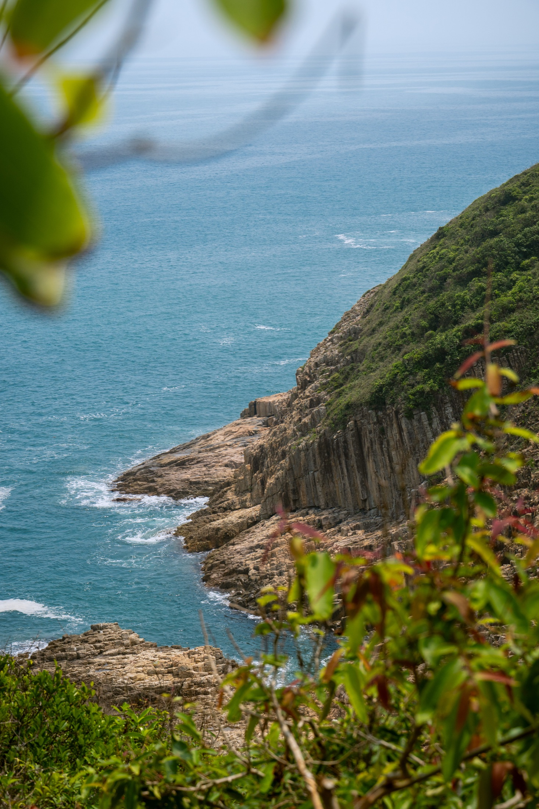
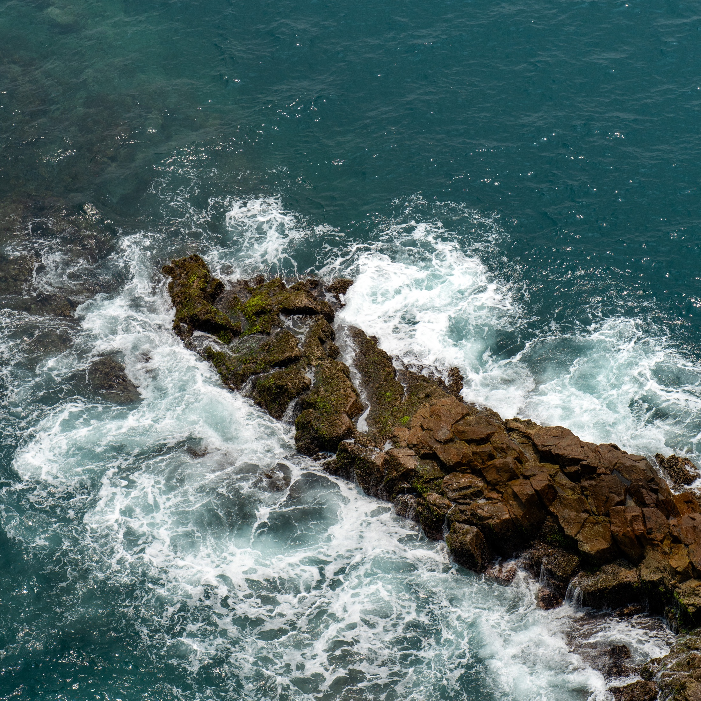
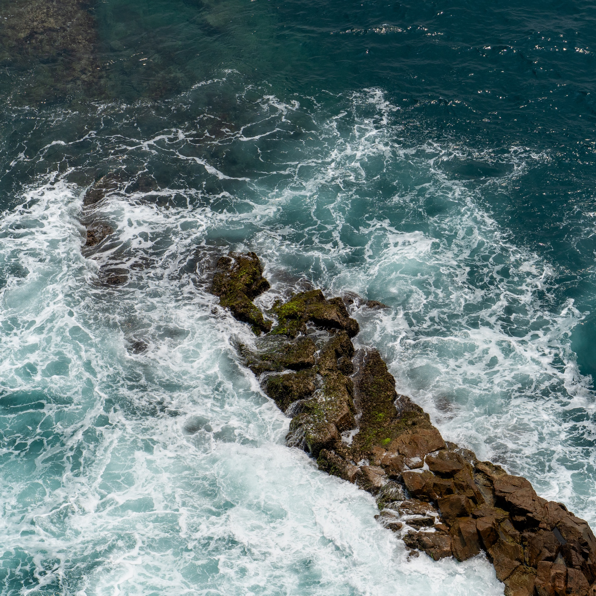

GF
／
GEORGE FAN
首页
作品集
文字
关于
← 返回所有作品集
COLLECTION 002 / 2026
麦理浩径
MACLEHOSE TRAIL
沿着海岸望出去，山与海之间有岩石、浪花，还有从画面里经过的一艘船。
05 PHOTOGRAPHS
APR 2026

01 / 山海之间
THE SERIES / 作品影像
点击照片可放大
02
小船与岩岸
03
经过

04
浪花

05
潮汐
END OF COLLECTION 002
所有作品集
↗
上一组：香港
↗
×
←
→